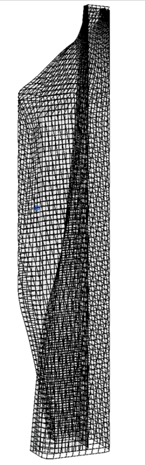
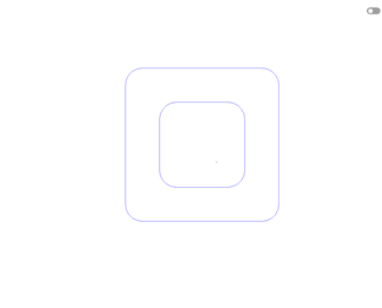
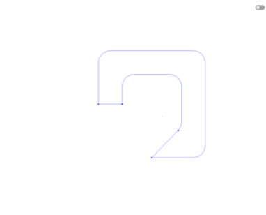
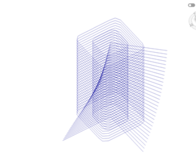
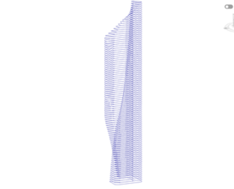
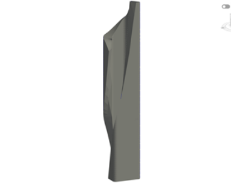
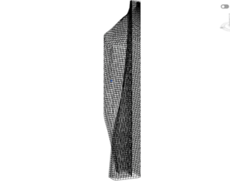
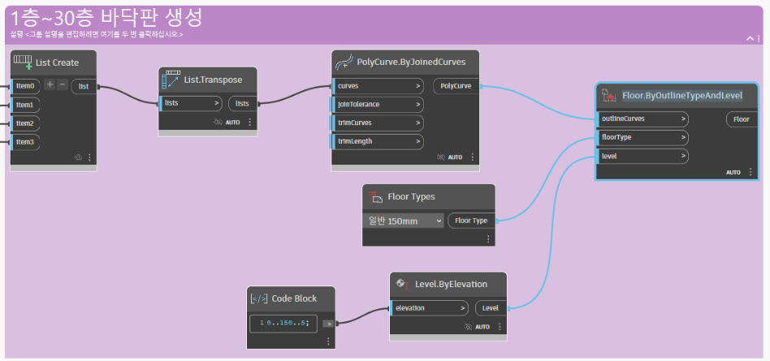
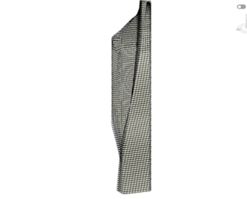

← 프로젝트 목록
Dynamo로 만든 알 함라 타워
비틀린 초고층 타워의 형태를 Revit Dynamo 노드로 생성한 파라메트릭 모델링

과제 요약
층마다 잘려 나가는 부분이 조금씩 회전하는 알 함라 타워의 형태를, 손으로 하나씩 그리지 않고 Dynamo 노드로 규칙을 만들어 자동으로 생성했습니다. 평면 윤곽 → 층별 회전 → 매스 → 커튼월 → 바닥판 순서로 모델을 완성했습니다.
01대상 건물: 알 함라 타워
- 위치쿠웨이트 시티 (쿠웨이트에서 가장 높은 건물)
- 규모높이 414m, 85층
- 기간2005년 착공 · 2011년 완공
- 설계Skidmore, Owings & Merrill (SOM)
- 용도사무실, 쇼핑몰 등 복합 용도
형태의 특징
- 직육면체에서 나선형 슬라이스가 제거된 형태로, 리본처럼 꼬인 듯한 실루엣을 가집니다.
- 위로 올라갈수록 남쪽 벽이 서쪽에서 동쪽으로 회전하며 점차 줄어들고, 바닥은 코어를 중심으로 반시계방향으로 회전합니다.
- 남쪽(사막 방향)에는 오피스 공간을 거의 두지 않아 태양열을 차단하고 에너지 효율을 높였습니다.
- 쌍곡선 포물면 형태의 벽이 구조적 역할(중력·횡력 저항)과 조형적 효과를 동시에 합니다.
02모델링 계획
- 윤곽 만들기
평면도와 비슷하게 모서리가 둥근 사각형 2개를 만든다.
- 자르는 선 그리기
잘라낼 모양대로 선을 그린다.
- 회전하며 쌓기
직선을 회전시키면서 쌓아 올려, 층마다 원하는 모양으로 자른다.
- 벽체·바닥 적용
만들어진 형태에 원하는 벽체와 바닥을 적용한다.
03모델링 과정
바닥 도면 틀 생성


벽체 생성




04바닥판 생성
- 방향 맞추기
Curve.Reverse로 곡선과 직선의 방향을 한 방향으로 일치시킨다.
- 순서대로 묶기
곡선의 시작점과 끝점이 이어지도록 순서에 맞게 List Create에 넣는다.
- 닫힌 윤곽 만들기
PolyCurve.ByJoinedCurves로 직선과 곡선을 하나의 닫힌 곡선으로 만든다.
- 바닥 생성
Floor.ByOutlineTypeAndLevel로 지정한 바닥 재료(일반 150mm)로 1층~30층 바닥판을 만든다.

